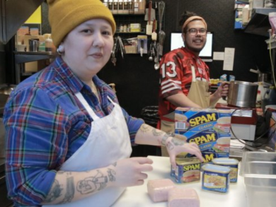
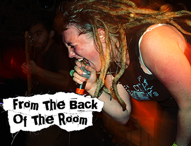

-
Lisptick and Leather
In a buttoned-up city like DC, what happens when drag queens go rogue? Lipstick and Leather explores the "alt-drag" community in the nations capital, and how these performers are spreading their influence across the east coast.
- 
Calasag
Calasag follows two first-generation Filipino-American entrepreneurs home to the islands, exploring culture and identity through cuisine, as they work to bring Filipino food traditions back to Baltimore.
-
Maryland Public Television
Maryland Public Television's original digital content.
-
Exotic
Every year, scores of women from the mainland United States travel to Guam to work as dancers in night clubs there. Who are they?
-

From The Back
of the RoomA retrospective of female involvement in DIY punk, from Dischord to the Diva Haus.